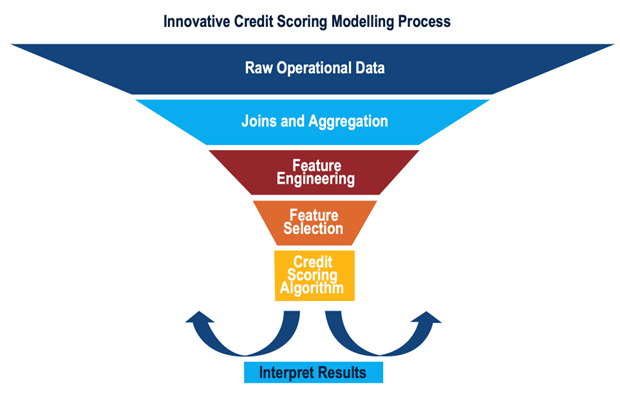
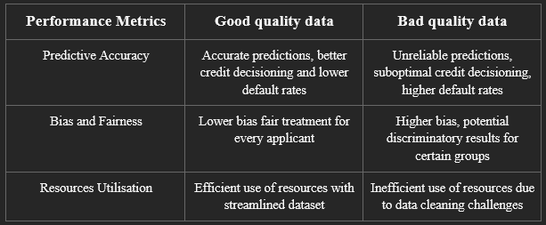
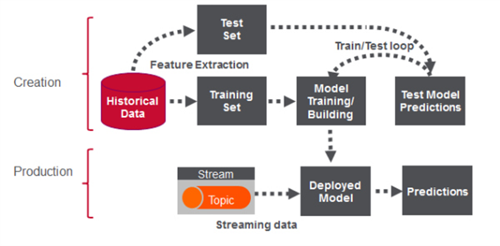
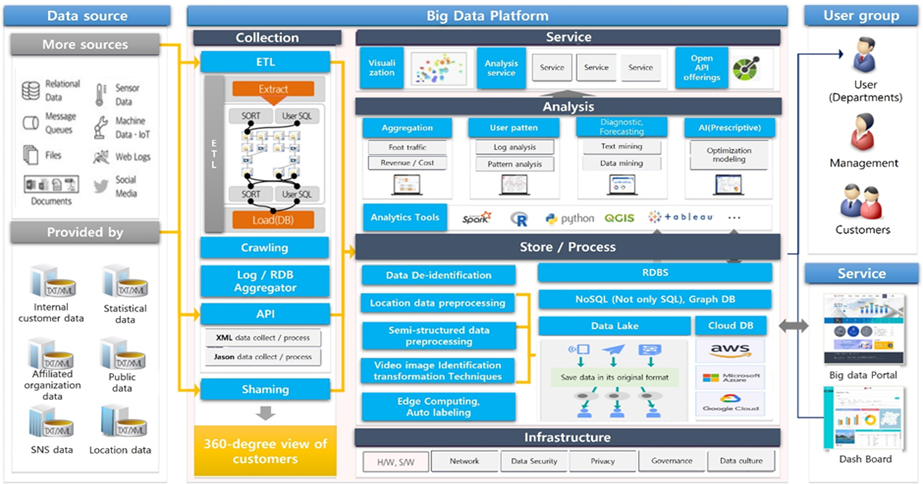
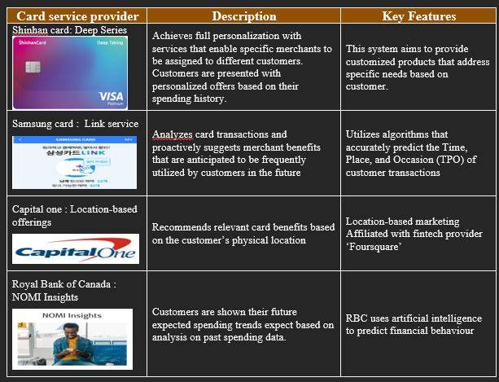
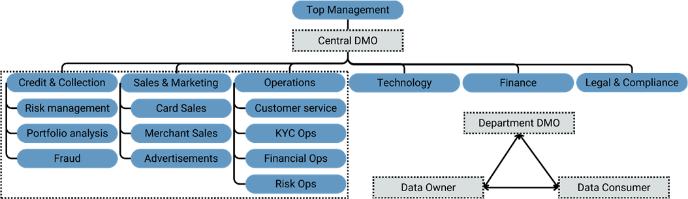

Data Quality as the Key enabler of Innovation and Digitisation
Project Topic
It is said that data is the key enabler of innovation and digitalisation, for example Generative AI.
Critically examine how good quality data can support these initiatives by providing clear examples and the financial values they bring.
Additionally, determine the roles and responsibilities of various parties involved in ensuring good quality data in your selected use case for innovation.
1. Introduction
The Credit Card industry has undergone significant transformations, transitioning from traditional rules-based decision-making to more agile, data-enabled methodologies. This transition is evident in the rapid adoption of data analytics, machine learning and artificial intelligence, which are not just revolutionizing credit card services but have also become critical tools to survive in the current competitive environment. For card issuers, the innovative use of data unlocks new opportunities to improve customer acquisition, boost product usage, and reduce losses from default and fraud.
However, the transformative potential of these technologies is highly dependent on the quality of the underlying data. Only when the data used is of good quality would the insights generated from data analysis be accurate and subsequently useful to businesses. The potential financial values are comprehensive, offering enhanced revenue opportunities, cost efficiencies, and strengthening risk management.
This report examines the role of good quality data as a key enabler of innovation and digitisation within this sector. Important data stakeholders will also be identified along with a discussion of their roles and responsibilities in ensuring good data quality.
2. Existing Challenges
According to a 2022 report by the Federal Reserve on credit card profitability, the main components of revenue were identified as transaction-related income, primarily derived from interchange fees and interest income on card balances. Conversely, the main drivers of expenses were loan loss provisions and fraud expenses. This underscores the importance of having both robust risk management and innovative revenue generating strategies in order to sustain a profitable business (Adams, 2022).
Credit card issuers are confronted with several business challenges, which include:-
The emergence of non-traditional customers with unconventional credit histories, which necessitate new methods and models to assess creditworthiness.
The increasing complexity and sophistication of financial fraud and cybercrime, requiring new detection models and tools to combat emerging threats.
An informed customer base that demands innovative products and personalized experiences.
New fintech alternatives that employ new business models and offer customer-centric products to compete for the same customer segments.
Alongside these business challenges, credit card issuers must also tackle fundamental business goals and objectives, such as:-
Attracting and retaining the right customers in a highly competitive market.
Increasing the usage of credit cards and associated ‘wrapped’ services.
Reducing losses from defaults and fraud.
Increasing customer value and loyalty.
In response to these business challenges and goals, card issuers should adopt digitalization and innovation initiatives, such as:
Enhanced Credit Scoring systems
Advanced Fraud Detection analysis
Hyper personalization of products and engagement
Importance of Good Quality Data
In the context of real-time credit scoring and fraud detection systems, the existing complexity of data, coupled with the need for timely processing, already present significant challenges. The use of poor-quality data in these critical functions further strains resources and could lead to inaccurate fraud detection and credit assessments outcomes.
Similarly, for Hyper-personalization strategies to be effective, marketing efforts and customer engagement initiatives should be designed upon analysing accurate and timely data. Poor quality data could result in marketing campaigns that miss the mark, diminished value propositions and potentially disengaged customers.
In the next section, we delve into each innovation initiative in more detail, analyzing the critical role of good quality data and the financial benefits these initiatives can potentially deliver to the business.
3. Use Cases for Innovation and Digitisation
3.1 Credit Scoring
Credit scoring for credit cards is a process performed by card issuers to determine the creditworthiness of retail customers. It is based on various factors to determine the likelihood of the individual repaying their debts. The outcome is typically a numerical credit score, with a higher score indicating a lower default risk and vice versa.
The methods used for credit scoring have increasingly evolved from traditional statistical methods to machine learning algorithms. These algorithms have improved accuracy and efficiency by being able to analyse large amounts of data and instantly provide credit scores and decisions. Traditional credit bureau data such age and income could be combined with data from online transactions, utility payments and even social media to train the machine learning models (Gambacorta et al., 2019).
The use of non-traditional data sources can potentially result in more accurate credit assessments, especially for individuals with limited credit histories or for those who are unable to be assessed using traditional credit scoring models (Poghosya, 2023).

Machine learning in credit scoring typically involves supervised learning, a type of machine learning where the model learns from labelled data. In this context, the label examples are default events and non-default events of borrowers. The first step of the modelling process is data collection and preparation. This is the process where traditional and non-traditional data are gathered from various sources and then pre-processed into formats suitable for machine learning algorithms. Next, relevant features and variables are selected for the model, such as credit history, debt ratio, income, and employment status. Feature selection is important as it directly impacts the model’s performance (Leder, 2023).
Lastly, the prepared dataset is then split into training and validation sets. The machine learning algorithm uses the training set to learn the relationships between the features and the labelled outcome, while the validation set is used to test the model’s performance and fine tune its parameters. Once the model has been trained and validated, it can then be deployed to the credit scoring system (Leder, 2023).
The impact of Data Quality on Machine Learning Algorithms
Data quality is a crucial factor in the performance of machine learning algorithms used in credit scoring. The table below provides a comparison between the impact of good and bad quality data on the model performance (Mashanovich, 2023).

3.2 Credit Card Fraud Detection
The COVID-19 pandemic has accelerated the decline of cash payments, making way for digital commerce. In today’s global economy, credit card payments have taken the lead in modern digital transactions. Unfortunately, this shift has also led to a rise in credit card fraud due to advanced technologies like contactless payment. According to a 2023 report from Nilson, Credit Card fraud losses globally amounted to $32.34 billion in 2021, an increase of 14% over 2020, when losses globally totalled $28.43 billion, (Robertson, D., 2023). Criminals are using more advanced methods to carry out illegal transactions, causing substantial losses for both cardholders and banks. With tactics such as stealing information, phishing for credit card details, and creating fake cards to imitate legitimate users, fraudsters are now more able to commit fraudulent activities than ever before. (Cherif et al., 2023).

Credit Card fraud prevention presents another compelling use case for innovation initiatives in financial services industry. In comparison to traditional rules-based fraud detection techniques, modern fraud prevention systems based on AI and machine learning algorithms, rely on vast amounts of historical transaction data to identify patterns and anomalies that may indicate fraudulent activities. This data is typically stored in a data warehouse and serves as the foundation for training, testing, and selection of machine learning models. During production, real-time transactions are streamed into the deployed model which assesses transaction risk score and determines potential fraud (HP Enterprise, 2020).
High-quality data, that is accurate, complete, consistent, and timely, enables fraud prevention systems to achieve the following outcomes and capabilities:
Accurate Identification of Fraudulent Transactions: By analysing transaction data, including cardholder information, transaction details, and merchant information, together with the potential use of knowledge graph databases and graph AI (Mauliddiah & Suharjito, 2023), fraud prevention systems can identify transactions that deviate from normal patterns, such as unusually large purchases or transactions conducted in unfamiliar locations.
Real-time Detection and Prevention: With timely and accurate data, fraud prevention systems can use real-time transaction scoring algorithms to detect and block fraudulent transactions in real-time, minimizing losses and protecting cardholders (Thennakoon et al., 2019).
Continuous Learning and Improvement: Machine learning algorithms used in fraud prevention systems rely on high-quality data to continuously improve their ability to identify and prevent fraudulent activities. With good quality data, machine learning algorithms can become more accurate, efficient, and adaptable to changing environments and unforeseen circumstances.
Conversely, poor-quality data can severely hamper credit card fraud prevention efforts. Inaccurate or outdated information might lead to false positives or negatives, resulting in either unnecessary blocks on legitimate transactions or missed detection of fraudulent activity. If transaction data is not up to date, the system may not accurately recognize a cardholder’s recent spending behaviour, making it more challenging to identify anomalies and more likely to reject an otherwise valid transaction.
Poor quality data can also introduce bias into machine learning algorithms, resulting in discriminatory outcomes and unfair treatment to legitimate customers. For example, transactions performed by individuals from certain geographic locations or with less established credit histories may be marked as fraudulent by the model, even though they may be legitimate. (European Union Agency for Fundamental Rights, 2022).
3.3 Hyper-personalization
Hyper-personalization presents credit card issuers with an ability to differentiate their products from their competition. Through the use of sophisticated algorithms that can analyse large datasets to discern spending patterns and predict future customer behaviour, card issuers are able to design marketing strategies that are tailored to individual customer needs and preferences.
The process begins with the aggregation and analysis of detailed customer data such as demographic information, purchasing habits, past transaction history, and digital interactions. By applying classification algorithms and predictive analytics, credit card issuers can segment customers, anticipate their needs, and provide timely and relevant offers and promotions.
In terms of system resources, hyper-personalization requires robust data management systems and advanced analytics platforms that can handle real-time processing and integration of various data streams. Data matching and aggregation, and Customer relationship management systems are also critical to synthesize this data into actionable insights (Fig 1).

However, all these technologies and systems are only useful when the quality of data they process is of good quality. Ultimately, it is the accuracy, completeness, and timeliness of customer data that empowers the algorithms to be able to recommend useful, impactful, and relevant actions, which consequently influences the effectiveness and relevance of marketing promotions and engagement.
Examples of how good quality data can directly impact marketing outcomes:-
Accurate data for Targeted Benefits
When transactional data accurately reflects a customer’s actual spending, AI-driven personalization can generate highly targeted customer rewards, such as travel points for frequent flyers. Conversely, inaccurate data could erroneously trigger irrelevant offers and benefits, undermining the relevance of promotions.
Complete data for Holistic Engagement
A complete dataset enables for a 360-degree view of the customer. Card issuers who also provide primary banking services are more able to design promotions that complement real-time customer needs and milestones, based on the consolidated financial data of that customer. For example, a new mortgage approval could trigger associated card benefits or discounts for the purchase of new household items.
On the other hand, incomplete data could result in generalized promotions that overlook key customer milestones. Therefore, having complete data not only enriches customer profiles but also ensure that promotions are relevant to a customer’s real time needs.
Timely data for Real-Time Relevance
The timeliness of data is essential in capturing real-time spending behaviour and providing immediate rewards or offers. For example, card issuers who quickly identify large-ticket purchases can proactively offer benefits like cashbacks or installment plans, leading to positive customer experiences and loyalty. Conversely, delayed recognition due to poor data quality may result in belated promotions, rendering them irrelevant for customers.
Unique data for Individual Recognition
Uniqueness of data ensures that each personalized interaction is distinct and relevant, such as recognizing and rewarding a customer’s milestone transaction with relevant promotions. Duplicate or non-unique data records could result in duplicated promotions or notifications, reducing the effectiveness and impact of marketing promotions.
According to a Woori financial institute report, the anticipated benefits of adopting hyper-personalization in banking services include a potential increase of revenue by approximately 5-15%, and cost savings in marketing costs by approximately 10-30%.
Other tangible benefits that can also be realized through hyper-personalization include:
Increased Customer Loyalty: Personalized experiences make customers feel valued and encourages repeat card usage.
Improved Customer Satisfaction: Accurate predictions of customer needs enhance satisfaction, leading to positive reviews and stronger brand reputation.
Increased Conversion Rates: Timely and relevant offers can significantly boost conversion rates.
Enhanced Customer Engagement: Personalized experiences lead to longer engagement sessions, and a more involved customer.
Higher Customer Lifetime Value (CLV): Increased card usage and spending leads to a higher return from each customer over their lifespan.
Greater ROI on Marketing Spend: Targeting the right customers with the right messages, at the right time, optimizes marketing spend and improves campaign effectiveness.
Reduce Attrition: Hyper-personalization can reduce customer attrition by making customers feel valued, and thus more willing to stay with the brand.
The Financial Institutions below (Table 1) have demonstrated innovative uses of customer data to create personalized and engaging customer experiences. These initiatives exemplify the trend of card issuers shifting from broad based marketing strategies to individualized customer interactions, through hyper-personalization.

4. Roles and Responsibilities of Stakeholders

4.1 Internal Stakeholders
Data Management Office (Led by the Chief Data Officer)
In the whole data management framework, the Data Management Office (DMO) serves as the propeller to provide data governance strategies, data quality rules and data architecture. It is the middle layer between downstream data owners and consumers, and upstream senior management. In an organization, the DMO oversights the whole process from data production to Extract, Transform, Load (ETL) processes and downstream applications. Its specific responsibilities to ensure data quality are as follows:
- Data quality rules
While it is up to the data owners and consumers to decide what data fields should be identified as Critical Data Elements (CDEs), it is the DMO’s responsibility to work with data consumers and set data quality rules, depending on applicable scenarios for different data quality dimensions, and minimum coverage for individual rules on CDEs.
- Data quality metrics
The DMO is responsible for the assessment of data quality for the individual departments as well as for the wider organization; and should thus provide the appropriate evaluation metrics and standards. While Data owners monitor Data quality at the granular level, the DMO evaluates the data quality performances for each department or function and set alerts when any quality risks emerge.
- Data remediation guidelines
While data remediation is not the responsibility of the Data Management Office, it should still provide the necessary guidelines and standard operating procedures (SOPs) for addressing different types of data quality issues. Remediation approaches can be different depending on the nature of the quality issue. For example, while an inconsistency issue for a date format can be easily corrected, an inconsistency issue for customer names could potentially turn out to be an accuracy problem and therefore fixing the name format itself could have undesirable impact on other data stakeholders.
If data management tools are utilized, guidelines and documentations on the proper usage of these tools should be provided by the DMO.
- Data documentations
The DMO should create and maintain business data documentations, in collaboration with data owners and consumers.
System Owner: Technology Department
The Technology department supports the technical implementation of all strategies provided by the DMO. To ensure data quality, in addition to having reliable tools and systems, the technology department is also responsible for two additional aspects: Controls and Remediations.
At the frontend, whether customer facing or third-party facing, preventive controls should be implemented to ensure accuracy, completeness, and conformity. At the backend and during any transformation processes, scheduled jobs and APIs could be utilized to help ensure uniqueness, consistency, and timeliness of data. Alerts could also be set up at each processing point to help detect job failures, abnormalities, etc. As per guidelines provided by the DMO, besides manual corrections, systems should also be able to automatically impute or self-fix low quality data through either the use of default values or through AI/ML derived solutions.
In addition, when there is an implementation of data management tools, the technology department is responsible for redevelopment, maintenance and providing applicational directions. They should also strive to automate as many processes as possible to eliminate human errors in End User Computing (EUC) tools.
Data Owner: Sales & Marketing, Credit & Collections and Operations departments
As the parties that face and collect data from customers, merchants or third-party data providers, these departments are automatically the data owners, and it is their responsibility as the first line of defence to establish data quality.
Guided by the DMO rules, SOPs and policies and supported by technology systems and tools, these departments should be responsible for accurate data input. Their responsibilities also extend to the following:
- Implement data quality rules
Data owners should implement the data quality rules collectively as defined by the DMO and data consumers. They should also put checks and alerts in place, monitoring beyond the coverage defined by the DMO threshold. When cooperating with third party data providers, for instance, in the case of aggregating external fraud reports from card acquirers, data quality standards should be aligned and formalized into Service Level Agreements, with help from the Legal team.
It is also the responsibility of Data Owners to provide feedback when data quality rules specified by the DMO are unreasonable or improvable.
- Data quality controls, evaluation, and remediation
Under the DMO guidelines, it is the data owners’ responsibility to evaluate the quality of CDEs, implement controls and receive alerts should the quality measurements fall below the threshold. They should also remediate data quality issues as they are discovered, either manually or through the use of tools and automation.
- Documentation and golden sources
Data owners should contribute to business data documentations to ensure downstream users understand and utilize the data correctly. Only when CDEs have been quality-checked, documented, and governed, should data owners then consolidate them into a single source of truth.
However, this approach may vary depending on specific use cases. For instance, in the case of the Risk and Fraud functions inside the Credit and Collections department, their golden source of customer’s credit-scores and assessments from risk models can be self-owned to tailor to their own requirements.
In contrast, data like customers’ personal information, which is collectively required by other departments for different application purposes, should be consolidated into a central golden source to prevent duplication of efforts, and ensure consistency. The departments can then align standards and requirements, and individual roles and responsibilities in terms of data governance.
Data Consumer: Sales & Marketing, Credit & Collections and Operations departments
As data consumers, these departments are responsible for analytics, reports and all data innovation previously mentioned. In short, they turn data into business decisions and profits for the organization. It is therefore their responsibility to analyse the actual business needs, and decide what data is required, what it should look like, and what qualifies as good quality data.
Additionally, they are to ensure correct calculations for metrics and define what constitutes as ideal performance for analytical models. They should also be responsible for the maintenance of data dictionaries and business glossaries to document any data logic or definitions associated with the analysis conducted. UATs and data profiling should also be conducted at their end to ensure that the data results behave as expected.
Legal, Compliance and Internal Audit
As the third line of defence, it is the responsibility of Internal Audit to oversight all processes and evaluate their effectiveness. The Legal and compliance department should also be responsible for the Service Level Agreements (data quality standards embedded) when third-party data providers are involved, and to make sure that the data quality satisfies regulatory requirements.
In the case of hyper-personalization and other similar initiatives where customer data, such as Personally Identifiable Information is used for data wrapping purposes, it is also the Legal team’s job to design and create consent forms and ensure that these are subsequently signed by customers.
Finance
The Finance department should ensure that all operational costs for data quality guardiancy are within budget and evaluate the financial values and costs in bringing in new data management or data quality tools, to support the decision-making of the Senior Management.
4.2 External Stakeholders
Third-party data providers: To provide reports with data quality as agreed in SLA.
Independent auditor: To make sure the data quality in the third parties are acceptable.
Regulatory bodies: To make policies (BCBS 239) and provide guidance for data quality and governance within organizations.
5. Conclusion
This report has highlighted the importance of good quality data as a key enabler for digitization and innovation initiatives in the credit card industry. Through the application of data analytics, machine learning, and artificial intelligence, card issuers can enhance credit scoring models, improve fraud detection, and offer more personalized customer experiences. Effective data utilization can potentially result in improved revenue, cost reduction, and enhanced social capital, empowering card issuers with a more sustainable business model.
The success of these initiatives is however dependant on a collaborative effort across the organization. The Data Management Office ensure that data policies and frameworks are in place. Departments such as Sales, Marketing, and Operations turn data into actionable insights that enable strategic decisions. In tandem, the Technology division supports these efforts with strong technology infrastructure, while Legal, Compliance, and Internal Audit provide the necessary oversight for compliance to policies, frameworks, and regulations. Working together, this integrated network enables the successful implementation of Innovation initiatives which then results in sustainable growth and competitiveness.
References
Adams, R. (2022, September 9). Credit card profitability. https://www.federalreserve.gov/econres/notes/feds-notes/credit-card-profitability-20220909.html
Cherif, A., Badhib, A., Ammar, H., Alshehri, S., Kalkatawi, M., & Imine, A. (2023). Credit card fraud detection in the era of disruptive technologies: A systematic review. Journal of King Saud University - Computer and Information Sciences, 35(1), 145-174. https://doi.org/10.1016/j.jksuci.2022.11.008
European Union Agency for Fundamental Rights. (2022, December 8). Bias in algorithms - Artificial intelligence and discrimination. https://fra.europa.eu/en/publication/2022/bias-algorithms-artificial-intelligence-and-discrimination
Mauliddiah, N., & Suharjito. (2023). Implementation Graph Database Framework for Credit Card Fraud Detection. Procedia Computer Science, 227, 326-335. https://doi.org/10.1016/j.procs.2023.10.531
Robertson, D. (2023, January 5). Card industry’s fraud-fighting efforts pay off: Nilson Report. Payments Dive. https://www.paymentsdive.com/news/card-industry-fraud-fighting-efforts-pay-off-nilson-report-credit-debit/639675/
Thennakoon, A., Bhagyani, C., Premadasa, S., Mihiranga, S., & Kuruwitaarachchi, N. (2019). Real-time credit card fraud detection using machine learning. In 2019 9th International Conference on Cloud Computing, Data Science & Engineering (Confluence) (pp. 1-6). IEEE.
Enterprise, H. P. (2020, November 18). Real time credit card fraud detection with Apache spark and event streaming. HPE Developer Portal. https://developer.hpe.com/blog/real-time-credit-card-fraud-detection-with-apache-spark-and-event-stream/
KPMG Economic Research Institute (2020, March), Data Science to Transform Business Operations, ISSUE MONITOR vol.121
Woori financial institute (2022, April), Global banks’ hyper-personalized banking practices and implications, Digital Insight
Korea Data Agency (2022, October), Utilizing Big Data in the Financial Industry, DATA INDUSTRY WHITE PAPER 2023
WorldBank (2019), Credit Scoring Approaches Guidelines, The World Bank Group, available at: https://thedocs.worldbank.org/en/doc/935891585869698451-0130022020/original/CREDITSCORINGAPPROACHESGUIDELINESFINALWEB.pdf
Mashanovich, N (2023), Credit Scoring: Prepare Your Data Right (Part 3), DataDrivenInvestor https://medium.com/@mashanovich/credit-risk-modeling-handbook-data-preparation-and-exploratory-data-analysis-part-3-2d8ed3f99096
Gambacorta L. (2019), BIS Working Papers https://www.bis.org/publ/work834.pdf
Poghosyan, S. (2023), Understanding Machine Learning Credit Scores: A Data Science and AI Approach, Plat AI https://plat.ai/blog/credit-scoring-using-machine-learning/